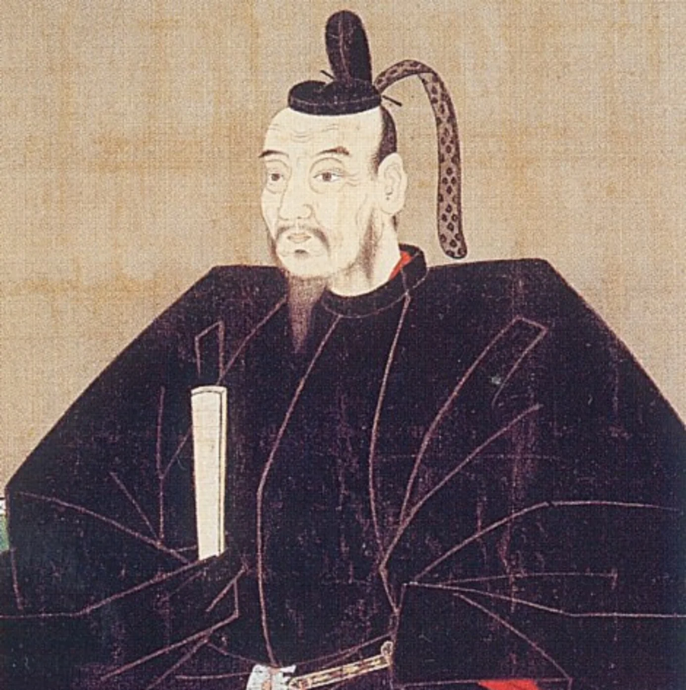

長宗我部元親戦国編 其の十八
「姫若子」と呼ばれたと伝わるおとなしい若君が、四国の大半を従えます。
生涯の要点
- 土佐の岡豊城の城主の子に生まれました
- 1560年、遅めの初陣でみずから槍をふるい「鬼若子」と呼ばれたと伝わります
- 1575年、土佐をまとめました
- さらに阿波・讃岐・伊予へ兵を進め、四国の大半を従えました
- 1585年、秀吉の大軍に降り、残されたのは土佐一国でした
- 1586年、豊後の戸次川の戦いで跡継ぎの信親を失いました
よくある疑問
「姫若子」とは？
若いころの元親は色白でおとなしく、「姫若子（ひめわこ）」と呼ばれたと伝わります。初陣で活躍してからは「鬼若子」と呼ばれたといいます。
四国を統一したの？
1585年ごろまでに四国の大半を従えました。ただし全土を完全に治めたかは議論があります。同じ年に秀吉に降り、土佐一国だけが残されました。

長宗我部元親像（秦神社所蔵）
60秒で見る
出典と画像
参考：コトバンク「長宗我部元親」（日本大百科全書・改訂新版 世界大百科事典・デジタル版 日本人名大辞典+Plus）
肖像：長宗我部元親像（秦神社所蔵）／Wikimedia Commons／パブリックドメイン
写真：岡豊城跡 撮影 Saigen Jiro／Wikimedia Commons／CC0
動画のナレーション：VOICEVOX:青山龍星